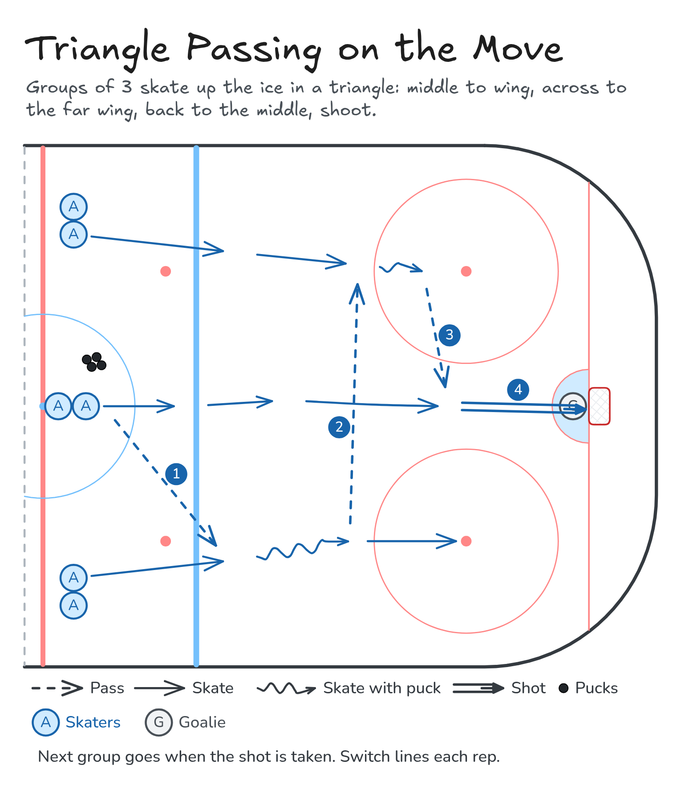

Triangle Passing on the Move
Groups of 3 skate up the ice in a triangle: middle to wing, across to the far wing, back to the middle, shoot.
- Half ice
- Passing
- Shooting
Watch
Diagram

Coaching points
- Keep the triangle: wings wide, middle trailing a little.
- Pass ahead of your teammate's stick so they don't slow down.
- Stick on the ice, ready for the pass.
- Middle player: drive the net hard after your pass.
- Call for the puck.
How it runs
- Three lines at centre ice: middle (with pucks), left wing, right wing.
- All three go. The middle passes to a wing.
- That wing passes across to the far wing.
- The far wing passes to the middle player driving the net.
- The middle player shoots.
- Switch lines and skate back to centre.
Downloads

Open the Excalidraw file in Excalidraw to change the diagram.